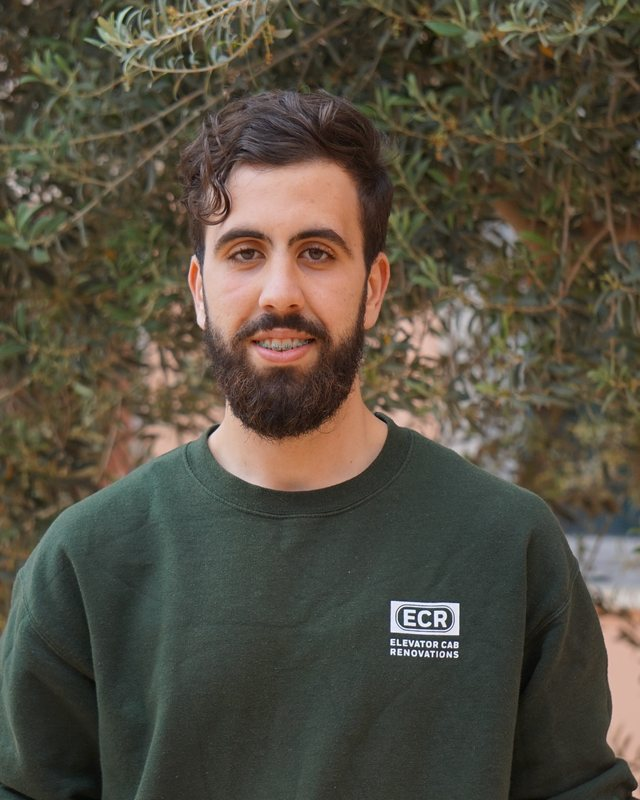

I take language models from experiment to a service you can rerun and trust.
Telecommunications engineering graduate with honors. I build Python and FastAPI services, retrieval and agent pipelines, and evaluation protocols where every configuration and dataset is traceable.

Across the whole ML lifecycle.
Select a stage to see what I’ve done there. I’m focused on evaluation right now.
Research first, then production.
AI researcher, cultural alignment of Fanar LLMs
- Contributing to a scientific article: literature review and evaluation of Arabic-language models on ACVA, AraTrust, ArabicMMLU and EXAMS Arabic.
- Building a reproducible Python workflow to diagnose alignment gaps, prepare preference pairs and apply DPO to a Fanar checkpoint.
- Defining a before/after DPO protocol that tracks cultural alignment, general capability retention, and every configuration and dataset.
AI engineering intern, Talan Tunisia
Agentic AI and enterprise systems. Built NeoCortex, a memory platform for AI agents, with FastAPI services on a hybrid vector, graph and SQL architecture, and evaluated how retrieved context affects answer reliability.
AI research intern, Talan Tunisia
Credit scoring and explainable AI. Built a scoring system with a Gradio interface, then implemented and compared SHAP, LIME, TokenSHAP, counterfactuals, LLM-as-a-judge and mechanistic interpretability, analyzing the fidelity, consistency and relevance of each explanation.
AI research intern, Talan Tunisia
Multimodal systems. Added processing and interactive visualization components to a multimodal application and wrote its technical documentation.
Things I’ve built and shipped.
NeoCortex
A memory platform for AI agents. It keeps context between sessions, records how an answer was reasoned, and retrieves across vectors, a knowledge graph and SQL tables so agents stay relevant and reliable. Built during my 2026 internship at Talan.
Credit scoring with explainable AI
A risk model with a Gradio interface, and a comparison of six ways to explain its decisions.
Bank audit portal
REST services with role-based access, logging and anomaly detection, packaged with Docker.
ECG analysis pipeline
Signal preprocessing, feature extraction and classification, served through a Flask app.
Driver distraction detection
A real-time prototype that detects phone use and gaze drift from a camera feed.
Multimodal RAG and VR chatbot
A biology assistant that retrieves context and predicts 3D protein structures with SMfold.
3rd place at NASA Space Apps Challenge and TomorrowLab
Podium finishes at the NASA Space Apps Challenge and at TomorrowLab (TPL / DAAD), solving problems with AI and data science in a team.
The toolbox.
MLOps and research
Reproducible experiments, evaluation and automation.
Back end and APIs
AI and machine learning
LLMs and agents
Data and infrastructure
Degree, certifications and languages.
Engineering degree in telecommunications, with honors
ENET’Com, Sfax, 2023 to 2026. Algorithms, machine learning, software development, databases and systems, after a preparatory cycle in mathematics and physics.
Certifications
- Azure Fundamentals (AZ-900)
- Azure AI Fundamentals (AI-900)
- Machine Learning in Production, DeepLearning.AI
- Jenkins CI/CD, KodeKloud
- MLOps Fundamentals, DataCamp
- Supervised Learning with scikit-learn, DataCamp
Languages and leadership
Arabic (native), English (C1), French (B2, TCF-TP), German (A2).
President of the TUNSA club and vice-president of training and development at JCI Korba.
Let’s build something reliable.
Email is the quickest way to reach me. I’m also open to research collaborations.